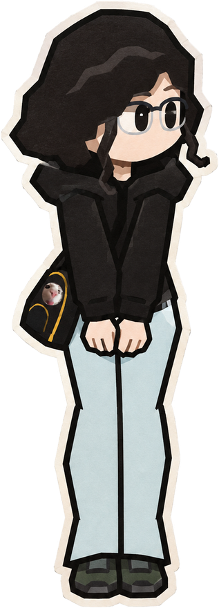
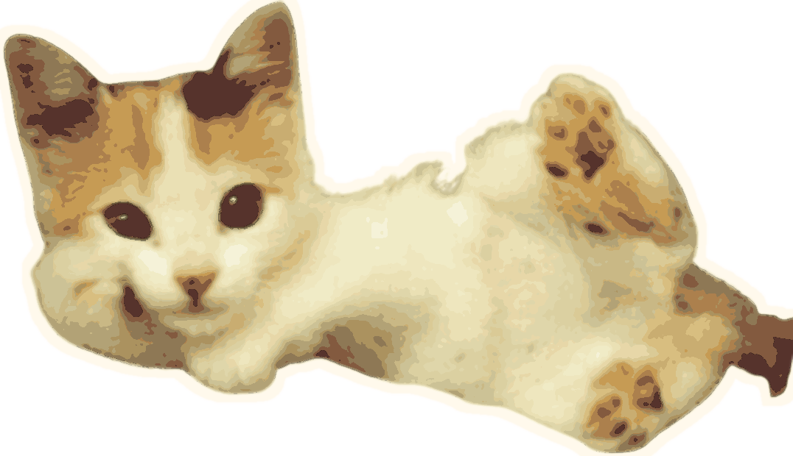

vai descendo a página pra trocar os balões :)

Espero que você esteja bem, quis começar com esse girassol, porque foi uma das primeiras coisas que fiz pra você, com a música do Tom Jobim, que você passou a gostar depois. Lembro de você toda vez que escuto em qualquer lugar.
Já perdi as contas de quantos dias fiquei escorado na minha janela olhando pra lua e pensando em você, ou até mesmo olhando aquele caminho que fazíamos pra ir pro ponto, quando eu tinha bicicleta e andávamos juntos quase caindo, você ficava tão feliz, sempre topou minhas loucuras.
Um dos dias mais especiais da minha vida foi quando eu fui com você pros Barbixas, a gente tava meio distante e, quando você pegou na minha mão no Uber eu fiquei tão, mas tão feliz. Te ver rindo com o show ou com alguma bosta que eu falei era a melhor coisa do mundo, você tava tão linda com aquela jaqueta de couro. As caipirinhas que o limão era só de enfeite porque era puro álcool, as comidas todas boas, e o principal de tudo, você.
nem de todo o resto também...

Foi muito difícil fazer isso e eu nem tô falando da programação, mas de ter que colocar pra fora todos esses sentimentos. Espero que isso não te traga emoções ruins, esse não é o objetivo de nada que tá aqui.
toque no envelope
essa resposta não vai pra mim, é simbólico